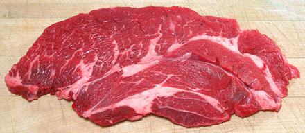

Beef Chuck Roast / Steak

[Under blade Roast / Steak, California Roast, Bottom Chick Roast / Steak]
"Chuck Roast / Steak" with no qualifiers, is probably from the Chuck
Under Blade Roast #116E cut from right under the shoulder blade at the
front of the beast. It has enough fat and connective tissue dispersed in
it to be moist and flavorful.
More on Cuts of Beef.
Cooking:
Many sources recommend braising these steaks,
but for those of us who don't mind a steak that fights back a little,
these are excellent, juicy and with beef flavor far better than the
premium cuts. They can be pan fried, grilled or broiled so long as they
are finished fairly rare. If cooked well done they will toughen up and
loose flavor.
The roast can be prepared and cooked by any method used for beef roasts,
and will cook faster, be moister, more flavorful and more forgiving than
most. It can, of course, also be diced up for stew meat which will cook
faster and taste a lot better than meat from a round roast.
ab_chkrstz 131104 - www.clovegarden.com
©Andrew Grygus - agryg@clovegarden.com - Photos
on this page not otherwise credited © cg1
- Linking to and non-commercial use of this page permitted